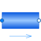

PartialStraightPipeBase class for straight pipe models |

|
Information
This information is part of the Modelica Standard Library maintained by the Modelica Association.
Base class for one dimensional flow models. It specializes a PartialTwoPort with a parameter interface and icon graphics.
Parameters (10)
| allowFlowReversal |
Value: system.allowFlowReversal Type: Boolean Description: = true to allow flow reversal, false restricts to design direction (port_a -> port_b) |
|---|---|
| nParallel |
Value: 1 Type: Real Description: Number of identical parallel pipes |
| length |
Value: Type: Length (m) Description: Length |
| isCircular |
Value: true Type: Boolean Description: = true if cross sectional area is circular |
| diameter |
Value: Type: Diameter (m) Description: Diameter of circular pipe |
| crossArea |
Value: Modelica.Constants.pi * diameter * diameter / 4 Type: Area (m²) Description: Inner cross section area |
| perimeter |
Value: Modelica.Constants.pi * diameter Type: Length (m) Description: Inner perimeter |
| roughness |
Value: 2.5e-5 Type: Roughness (m) Description: Average height of surface asperities (default: smooth steel pipe) |
| V |
Value: crossArea * length * nParallel Type: Volume (m³) Description: volume size |
| height_ab |
Value: 0 Type: Length (m) Description: Height(port_b) - Height(port_a) |
Connectors (2)
| port_a |
Type: FluidPort_a Description: Fluid connector a (positive design flow direction is from port_a to port_b) |
|
|---|---|---|
| port_b |
Type: FluidPort_b Description: Fluid connector b (positive design flow direction is from port_a to port_b) |
Components (1)
| system |
Type: System Description: System wide properties |
|---|
Extended by (2)
|
Modelica.Fluid.Pipes Dynamic pipe model with storage of mass and energy |
|
|
Modelica.Fluid.Pipes Basic pipe flow model without storage of mass or energy |